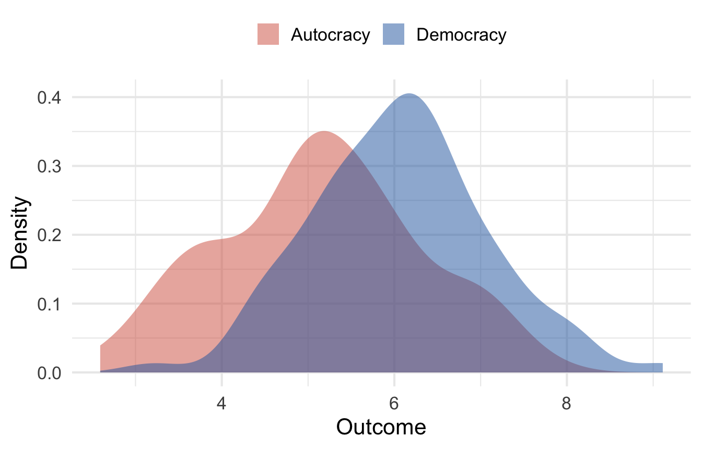
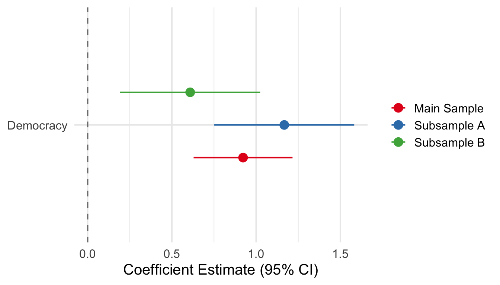

| Unique | Missing Pct. | Mean | SD | Min | Median | Max | |
|---|---|---|---|---|---|---|---|
| GDP per Capita | 200 | 0 | 12411.55 | 14157.34 | 406.23 | 7971.36 | 120799.93 |
| Democracy | 2 | 0 | 0.44 | 0.50 | 0.00 | 0.00 | 1.00 |
| Trade Openness | 200 | 0 | 55.61 | 24.90 | 10.81 | 54.01 | 99.31 |
| Outcome | 200 | 0 | 5.55 | 1.19 | 2.59 | 5.53 | 9.11 |
Research Title Here
Subtitle
Title Slide
Research Puzzle
Motivating Question
This is a bulleted list - First bullet - Second bullet - Third Bullet in Bold
Background and Literature
What we know
What remains unresolved
- Gap 1 — brief description
- Gap 2 — brief description
This paper’s answers this question
Speaker notes: These don’t show up on the screen, but can be useful when building
Hypotheses
Based on [theory / mechanism], I derive the following expectations:
H1 (Main): As X increases, Y increases, because [mechanism].
Null Hypothesis If [rival theory] holds, we would instead expect [alternative pattern].
Measurement
Descriptive Statistics
Descriptive Statistics (cont.)

Primary Regression Results
| Bivariate | + Controls | Full Model | |
|---|---|---|---|
| (Intercept) | 5.132*** | 2.746*** | 2.418*** |
| (0.104) | (0.705) | (0.695) | |
| Democracy | 0.930*** | 0.915*** | 0.923*** |
| (0.157) | (0.153) | (0.149) | |
| ln GDP per Capita | 0.267*** | 0.241*** | |
| (0.078) | (0.076) | ||
| Trade Openness | 0.010*** | ||
| (0.003) | |||
| Num.Obs. | 200 | 200 | 200 |
| R2 | 0.151 | 0.199 | 0.241 |
| R2 Adj. | 0.147 | 0.191 | 0.230 |
| * p < 0.1, ** p < 0.05, *** p < 0.01 |
Key finding: Democracy is positively and significantly associated with the outcome across all specifications.
Regression Robustness Checks

The positive effect of democracy is stable across sample splits and alternative specifications.
Contributions & Qualitative Research Proposal
Theoretical Contributions
- Contribution 1 — how this paper advances existing theory
- Contribution 2 — novel mechanism or scope condition identified
Empirical Contributions
- Contribution 3 — new data, identification strategy, or case coverage
Qualitative Follow-Up
To probe the mechanism, future work should conduct [case studies / interviews / process tracing] in:
| Case | Rationale |
|---|---|
| Country A | Most-likely case for H1 |
| Country B | Least-likely case — hard test |
| Country C | Deviant case — unexplained by model |
Discussion
Implications
Briefly state what these findings mean for theory and / or policy.
Limitations and future research
- Limitation 1
- Limitation 2
Conclusion
Summary of findings
- Finding 1 — one sentence
- Finding 2 — one sentence
- Finding 3 — one sentence
Thank You
[Your Name] [your.email@niu.edu]
Slides and replication materials available at [link]